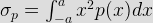
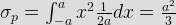

- A 0 - 25 Amp has guranted accuracy of 1 % of full scale reading the current measured by this ammeter is 10 Amp. The limiting error in percentage for this instrument is
The magnitude of limiting error of the instrument
δ A = ε r × A = (1/100) 25 = 0.25 A
The magnitude of the current being measured 10 A. The relative error at this current is
ε r = δ A/a = 0.25/10 = 0.025
Therefore, the current being measured is between the limit of A = Am (1 ± εr) = 10 ( 1 ± 0.025) = 1 ± 0.025 A
The liliting error = 0.25/10 × 100 = 2.5 %. - The quantity 1/√ (ε0 μ0) in SI units has the
In any system of unit of permeability of free space μ0 and permittivity of free space ε0 are related by relation.
μ0 ε0 = 1/v 2
Where V is the velocity of light in the system
Here 1/√(μ0ε0 = V
The dimension of velocity is LT- 1. - A zero means random signal uniformly distributed between limits – a and + a its mean square of the signal is
Let a signal p(n) is uniformly distributed between limits – a to a
Variance,


It means square value is equal to this variance
So, prms2 = a2/3
&therefoe; prms = a/√ 3. - The total current I = I1 + I2 in a circuit is measured as I1 = 150 ± 1 A and I2 = 250 ± 2 A. where the limits of error are given as standard deviations. It is measured as
I1 = (150 ± 1) A
The limiting error = 1/150 × 100 = 0.67 %
I2 = (250 ± 1) A
The limiting error = 2/250 × 100 = 0.8 %
So, the total current is measured as
= (150 + 150) ± (0.67 + 0.8) A
= (400 ± 1.47) A = (400 ± 1.5) A. - Identify the one which is not fundamental unit in SI system
Fundamentals unit in mechanics are measure of length, mass and time. As measure of certain physical quantities in the thermal, electrical, illumination fields are also represented by fundamentals unit.
- The dimensional equation of resistance is
Resistance = V/I = potential difference/current
Dimension of potential difference is = [ML2 T- 3 I - 1]. - A circuit draws a current of I when a single phase ac voltage V is applied to it. If the power factor cosφ then the dimension of VI cos&phi would be
Here cosφ is dimensionless
The dimension of current is [I]
The dimension of V is [ML2 T- 3 I- 1]. - In the SI system, the dimension of emf is
Emf = work done/change
The dimention of charge = [TI]
The dimension of work done = Force × Distance = [MLT- 2] × [L]. - Absolute measurement of resistance involves the measurement of
The resistance has the dimensions [μ LT- 1] in the electromagnetic system of units. Taking the permeability as dimensionless, the dimension velocity. Thus absolute measurement of resistance involves the measurement of either a velocity or the measurement of length and time.
- The absolute measurement of current involves the measurement of
The dimension of current are [μ½ M½ L½ T- 1] in e.m. system. If we regard permeability as non dimensionless quantity, the dimension of (current) 2 are [MLT - 2] which are the dimension of force. Therefore the absolute measurement of current involves the measurement of force.
- Which one of following statements correctly response the systematic error?
Systematic error the error that remain constant on change according to a definite land on repeated measurement of the given quantity. These errors can be evaluated and their influence on the result of measurement can be eliminated by the introduction of proper correction. There are two type systematic error occur. One is instrument error which are inherent in the measuring instrument and another is environmental error which are much more troublesome as the errors change with time in an unpredicted manner.
- Two capacitance, C1 = 150 ± 2.4 μF and C2 = 120 ± 1.5 μF in parallel. What is the limiting error of the resultant capacitance C?
The limiting value of resultant capacitance is Ceq = C1 + C2 = (150 + 120) ± (2.4 + 1.5) μF = 270 ± 3.9 μF
So limiting error in μF is 3.9. - The units whose size cannot be chosen independently are called
The units which can be expressed in terms of fundamental units with help of any physical equations are called derived unit i.e. area, density, volume etc. Thus every derived unit originates from some physical law or equation which defines the unit. So the size cannot chosen independently.
- Consider the following statements. The absolute value current can be measured by
1. Tangent galvanometer
2. Current balance instrument
3. Dynamometer type moving coil ammeters of these statementsThe absolute measurement of a force. This force may be exerted in two ways
i) By the current in a solenoid upon a suspended magnetic needle – as in a tangent or sine galvanometer.
ii) By the current in one part of circuit upon another part of the circuit in series with it and carrying the same current as in a current balance. - For defining the standard meter, wavelength of which material is considered?
In 1960, the meter was redefined more accurately in terms of an optical standard. This was orange red radiation of krypton atom. The internationally recognized krypton – 86 discharge lamp when exited and observed under well defined condition, emits orange light whose wavelength constitute the basic unit of length. The meter is equal to 1650763.73 wavelengths in vaccum of the orange dored light radiation of the krypton – 86 atom.
- For time and frequency, the working standard is
A crystal controlled oscillator is very easy to constant atomic clocks of great precision and accuracy by frequency conversion (since the frequency is inversely proportional to time) than other oscillator.
- The modern standard of time is
The international commetee of weight and Measures defines the second in terms of cesium – 133 transitions assigning a value of 9192631770 Hz to hyperfine transition of cesium – 133 atom unperturbed by external fields.
- The emf of a satured Weston cell drops by increase in the temperature at a rate
Weston cell consist essentially of mercury as the positive element and cadmium amalgam as the negative element. This is also a type of voltaic cell. The emf of the cell is 1.01864 volt. The emf of the cell changes with temperature and it is related by following equation,
Et = E20 - 0.000064 (t – 20) – 0.00000095 (t – 20)2 + 0.00000001 (t – 20)3
Where E t = emf of the cell at t° c
E20 = emf of the cell at 20° c
From above equation, the cell voltage drop by increase in temperature of 1° c about 40 μV. - What is the unit sheet resistivity?
Resistivity is in unit of ohm-meter. In case of sheet resistivity, when divided by sheet thickness, then the unit becomes ohm/sq. meter.
- The internal resistance of a standard Weston cell is of the order of
Weston cell is used for primary voltage standardization. Standard cell will have precise and accurate constant voltage when current drawn from it is few microamperes only. So the internal resistance of a Weston cell is less accurate.
Design with  by SARU TECH
by SARU TECH
www.sarutech.com
Content Credited to electrical4u.com
Online Electrical Engineering Study Site